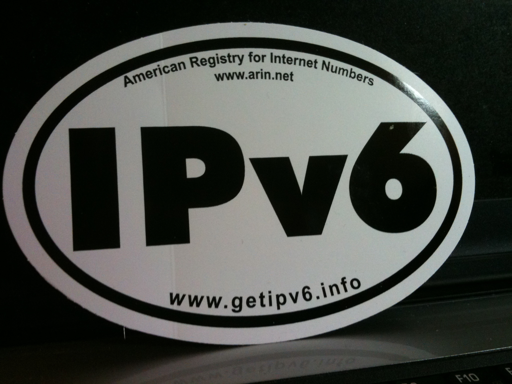

Blog: Quirks in the Windows IPv6 address parsing and printing APIs
description: Half of the world still lacks Internet access, but there are no IPv4 addresses left to hand out - which means that software libraries for IPv6 deserve scrutiny now.
date published: 2020-12-04 | date updated: 2020-12-04

Half of the world still lacks Internet access, but there are no IPv4 addresses left to hand out. On the other hand, 33% of Google's customer base has a working IPv6 connection now and Apple is pushing developers to switch just for the performance benefits. It's clear that IPv6 will be increasingly important as time goes on, which means that software libraries for IPv6 deserve scrutiny now.
Microsoft Windows has accumulated numerous API functions for converting IPv6 addresses from text to binary (parsing) and from binary to text (printing), including:
- iphlpapi.ParseNetworkString
- ws2_32.inet_ntop
- ws2_32.InetNtopW
- ws2_32.inet_pton
- ws2_32.InetPtonW
- ws2_32.WSAAddressToStringA
- ws2_32.WSAAddressToStringW
- urlmon.CreateUri (string normalization only)
- dnsapi.DnsIpv6AddressToString (undocumented)
- dnsapi.DnsIpv6StringToAddress (undocumented)
However, all of these functions behave identically to, and are surely built upon, the following:
- ntdll.RtlIpv6AddressToStringA
- ntdll.RtlIpv6AddressToStringW
- ntdll.RtlIpv6AddressToStringExA (not explicitly documented)
- ntdll.RtlIpv6AddressToStringExW
- ntdll.RtlIpv6StringToAddressA
- ntdll.RtlIpv6StringToAddressW
- ntdll.RtlIpv6StringToAddressExA (not explicitly documented)
- ntdll.RtlIpv6StringToAddressExW
The two RtlIpv6AddressToString functions only print plain IPv6 addresses. The Ex suffix in the RtlIpv6AddressToStringEx functions indicates that they were added later, and they can print addresses with or without a network interface number or port.
Likewise, the RtlIpv6StringToAddress functions are older and can only parse plain IPv6 addresses. They report the terminator via a pointer argument, the terminator being the first unparsable character in the input string. The newer RtlIpv6StringToAddressEx functions can, in addition to parsing unadorned addresses, parse text that includes a network interface number or port. Furthermore, the Ex functions are more strict about what they accept than the originals: They do not report the terminator because they just return an error code if the address does not end at the end of the string.
This year (2020), I implemented all eight of those ntdll functions for Wine from scratch, knowing nothing about how the Windows implementations are coded. I tested millions of string inputs to determine exactly what counts as an IPv6 address in Windows, and in the process found some interesting quirks that could lead to security vulnerabilities in Windows software.
RtlIpv6StringToAddress(Ex) might give you the wrong address
In a spec-conformant IPv6 address parser, a ::
represents two or more bytes of zeros.
In the Windows APIs, this is only true if the double colon is in the middle or
at the end of the address: If it comes at the beginning, it counts as at least
four bytes of zeros. For example, if the address ::1 were written as
::0:0:0:0:0:0:0:1 (perfectly valid according to the spec),
RtlIpv6StringToAddress reports that the terminator is the last : instead of
the null terminator \0 and it returns STATUS_SUCCESS.
RtlIpv6StringToAddressEx is better because it returns the error code
STATUS_INVALID_PARAMETER instead. Nevertheless, both functions fill the
address buffer with the parsed address, minus two bytes at the end and plus two
zero bytes at the beginning. In this example, the binary address that is stored
will be :: instead of ::1. If the calling program does not check for errors
thoroughly, this defect could expose sensitive data by causing server software
to bind to :: (all addresses) instead of ::1 (localhost only).
The fact that Windows fails to parse some valid addresses is a compelling reason to avoid using the Windows IPv6 parsing APIs altogether, since differences between how IPv6 implementations output and interpret addresses can lead to software incompatibility. I felt that this was such a glaring problem that I wrote to Microsoft Security about it in January 2020, but because they did not consider it to be a significant security issue, it has yet to be fixed.
RtlIpv6AddressToString writes past the null terminator
RtlIpv6AddressToString always zeroes out the 46th character of the buffer, even though the longest possible normalized native IPv6 address is only 39 characters:
1111:2222:3333:4444:5555:6666:7777:8888
If the input is an ISATAP address
(indicated by 0 or 200 in the fifth component and 5efe in the sixth
component), the longest possible normalized address increases to 44 characters
in length, which is still one less than 45:
1111:2222:3333:4444:200:5efe:255.255.255.255
Overwriting the 46th character could cause a buffer overflow if the function is given an output buffer of less than 46 characters. The problem was fixed in RtlIpv6AddressToStringEx, which writes the minimum number of characters necessary.
RtlIpv6StringToAddress does not limit the length of the last component
An IPv6 address is invalid if any of its components are longer than four digits
(even if the extra digits are just leading zeros). And since IPv6 address
components are hexadecimal by default, there's no prefix like 0x to switch
from decimal to hexadecimal. However, RtlIpv6AddressToString waives the length
requirement for the last component if it is prefixed with 0x, for example:
::0x9999999999999999999999999999999999999999999999999999999999999999999999abcd
No matter how long the last component is, if it starts with 0x and contains
only hexadecimal digits, the value is taken from the last four digits (::abcd
in this example), the terminator is set to the x, and STATUS_SUCCESS is
returned. This could result in a buffer overflow if an address that
RtlIpv6AddressToString validates is assumed to be 45 characters or less and then
copied to a 45-character buffer. The problem is more or less fixed in
RtlIpv6StringToAddressEx, which returns STATUS_INVALID_PARAMETER if it
encounters a 0x, although it still parses and saves the value following the
0x in the same way as RtlIpv6StringToAddress.
Best practices
With all of the above in mind, here's what I recommend:
- For the sake of interoperability, avoid the Windows IPv6 parsing APIs if possible. Use an external library such as ipv6-parse instead.
- If you do use the Windows IPv6 parsing or printing APIs, always use the Ex functions instead of the older ones.
- Check the return value of RtlIpv6StringToAddressEx for errors, even if you have already validated the IPv6 address with a spec-conformant parser.
Happy coding! And if you're not already using Wine, be sure to check out the Wine 6.0 release (I'll be calling it "Wine Vista") which is due out at the beginning of next year. Apart from improved IPv6 support, compatibility with popular Windows software has taken an enormous step forward since Wine 5.0 thanks to an overhauled software architecture and tighter integration with MinGW.
Photo credit: Phil Wolff